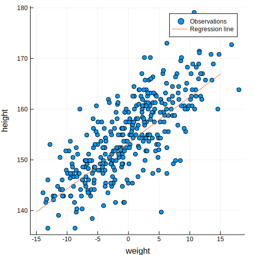

using StatisticalRethinking
gr(size=(500,500));
Turing.setadbackend(:reverse_diff)
ProjDir = rel_path("..", "chapters", "04")
cd(ProjDir)loaded
┌ Warning: Package Turing does not have CmdStan in its dependencies:
│ - If you have Turing checked out for development and have
│ added CmdStan as a dependency but haven't updated your primary
│ environment's manifest file, try `Pkg.resolve()`.
│ - Otherwise you may need to report an issue with Turing
│ Loading CmdStan into Turing from project dependency, future warnings for Turing are suppressed.
└ @ nothing nothing:840
WARNING: using CmdStan.Sample in module Turing conflicts with an existing identifier.snippet 4.43
howell1 = CSV.read(rel_path("..", "data", "Howell1.csv"), delim=';')
df = convert(DataFrame, howell1);Use only adults
df2 = filter(row -> row[:age] >= 18, df);Center the weight observations and add a column to df2
mean_weight = mean(df2[:weight])
df2 = hcat(df2, df2[:weight] .- mean_weight)
rename!(df2, :x1 => :weight_c); # Rename our col :x1 => :weight_cExtract variables for Turing model
y = convert(Vector{Float64}, df2[:height]);
x = convert(Vector{Float64}, df2[:weight_c]);Define the regression model
@model line(y, x) = begin
#priors
alpha ~ Normal(178.0, 100.0)
beta ~ Normal(0.0, 10.0)
s ~ Uniform(0, 50)
#model
mu = alpha .+ beta*x
for i in 1:length(y)
y[i] ~ Normal(mu[i], s)
end
end;Disable updating progress of sampling process
Turing.turnprogress(false);┌ Info: [Turing]: global PROGRESS is set as false
└ @ Turing /Users/rob/.julia/packages/Turing/pRhjG/src/Turing.jl:81Draw the samples
chn = sample(line(y, x), Turing.NUTS(2000, 1000, 0.65));┌ Info: [Turing] looking for good initial eps...
└ @ Turing /Users/rob/.julia/packages/Turing/pRhjG/src/samplers/support/hmc_core.jl:246
[NUTS{Union{}}] found initial ϵ: 0.0015625
└ @ Turing /Users/rob/.julia/packages/Turing/pRhjG/src/samplers/support/hmc_core.jl:291
┌ Warning: Numerical error has been found in gradients.
└ @ Turing /Users/rob/.julia/packages/Turing/pRhjG/src/core/ad.jl:114
┌ Warning: grad = [9.77018, -246.999, NaN]
└ @ Turing /Users/rob/.julia/packages/Turing/pRhjG/src/core/ad.jl:115
┌ Info: Adapted ϵ = 0.044462752933641304, std = [1.0, 1.0, 1.0]; 1000 iterations is used for adaption.
└ @ Turing /Users/rob/.julia/packages/Turing/pRhjG/src/samplers/adapt/adapt.jl:91
[NUTS] Finished with
Running time = 189.38645733500005;
#lf / sample = 0.004;
#evals / sample = 20.942;
pre-cond. metric = [1.0, 1.0, 1.0].Describe the chain result
#describe(chn)
for var in [:alpha, :beta, :s]
println("$var = ", mean_and_std(chn[Symbol(var)][1001:2000]))
endalpha = (154.61078700045508, 0.2724353848980195)
beta = (0.9066138974896988, 0.04095449280236761)
s = (5.098763886954905, 0.19522522291317368)Compare with a previous result
clip_43s_example_output = "
Iterations = 1:1000
Thinning interval = 1
Chains = 1,2,3,4
Samples per chain = 1000
Empirical Posterior Estimates:
Mean SD Naive SE MCSE ESS
alpha 154.597086 0.27326431 0.0043206882 0.0036304132 1000
beta 0.906380 0.04143488 0.0006551430 0.0006994720 1000
sigma 5.106643 0.19345409 0.0030587777 0.0032035103 1000
Quantiles:
2.5% 25.0% 50.0% 75.0% 97.5%
alpha 154.0610000 154.4150000 154.5980000 154.7812500 155.1260000
beta 0.8255494 0.8790695 0.9057435 0.9336445 0.9882981
sigma 4.7524368 4.9683400 5.0994450 5.2353100 5.5090128
";Example result for Turing with centered weights (appears biased)
clip_43t_example_output = "
[NUTS] Finished with
Running time = 163.20725027799972;
#lf / sample = 0.006;
#evals / sample = 19.824;
pre-cond. metric = [1.0, 1.0, 1.0].
Mean SD
alpha = (154.6020248402468, 0.24090814737592972)
beta = (0.9040183717679473, 0.0422796486734481)
s = (5.095714121087817, 0.18455074897377258)
";Plot the regerssion line and observations
xi = -15.0:0.1:15.0
yi = mean(chn[:alpha]) .+ mean(chn[:beta])*xi
scatter(x, y, lab="Observations", xlab="weight", ylab="height")
plot!(xi, yi, lab="Regression line")
End of clip_43t.jl
This notebook was generated using Literate.jl.